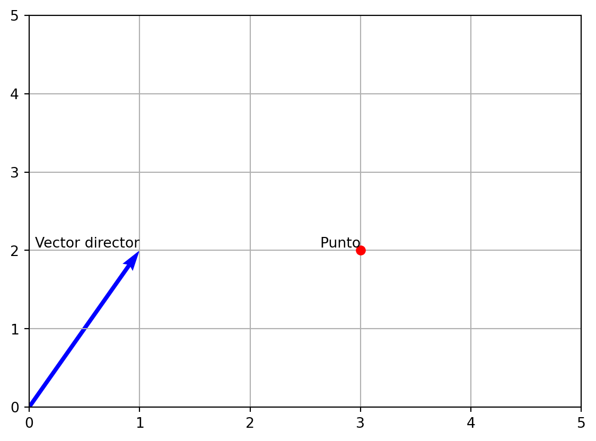
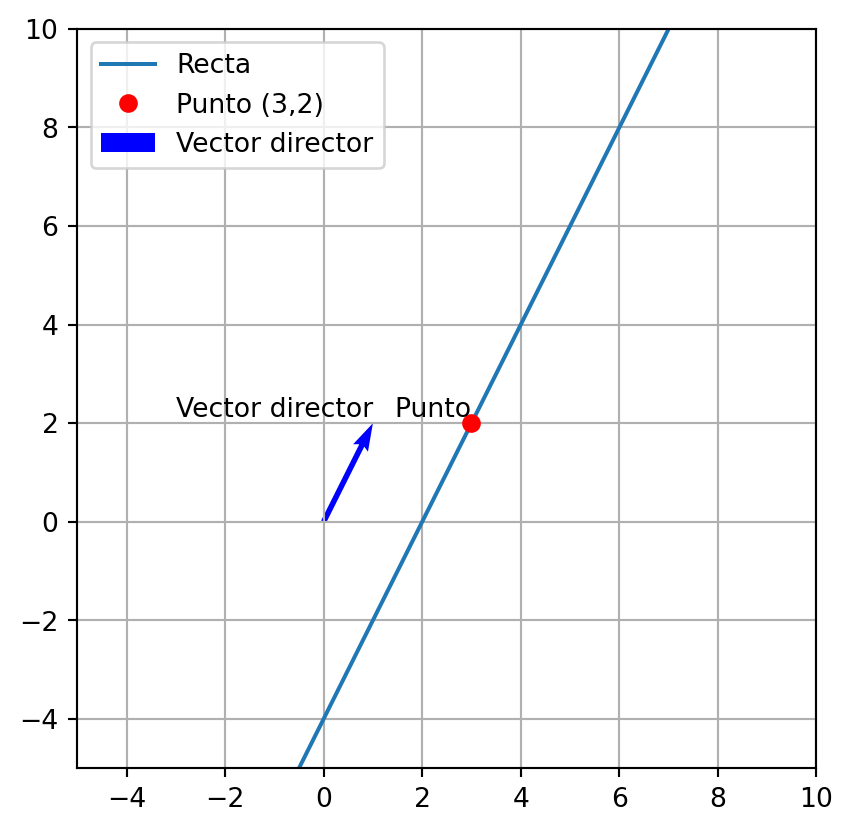
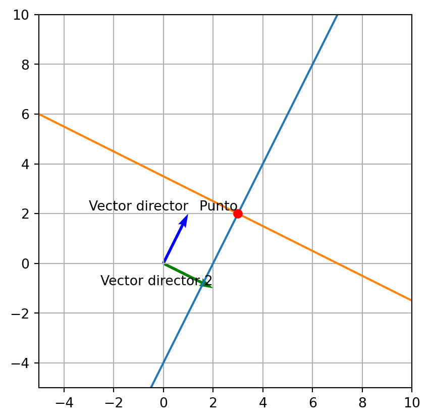
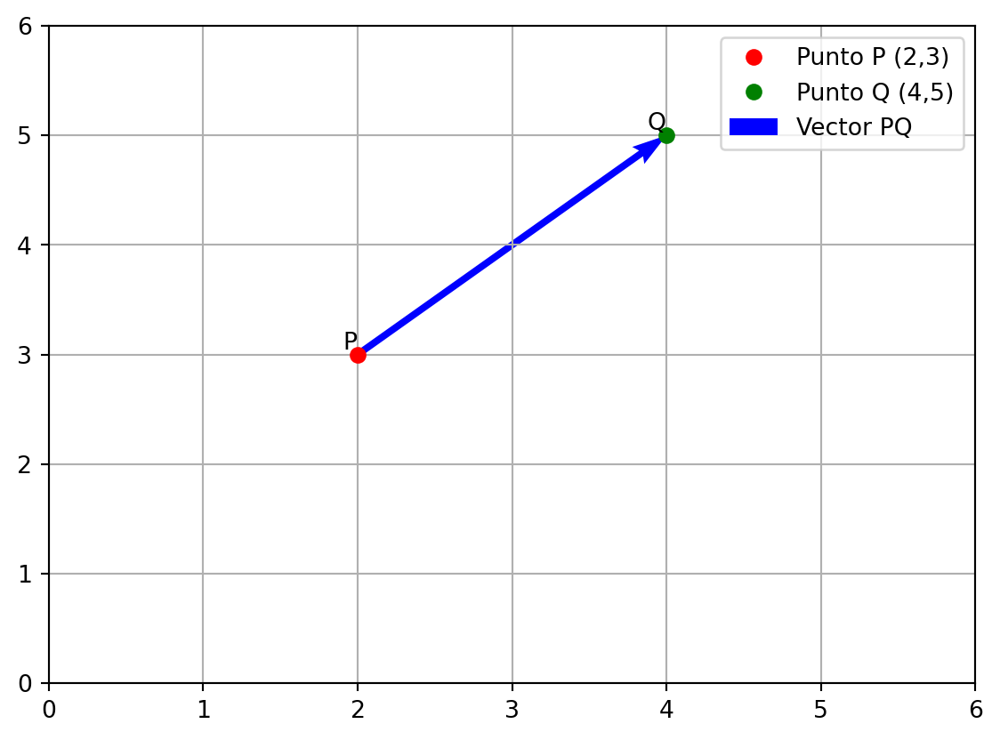
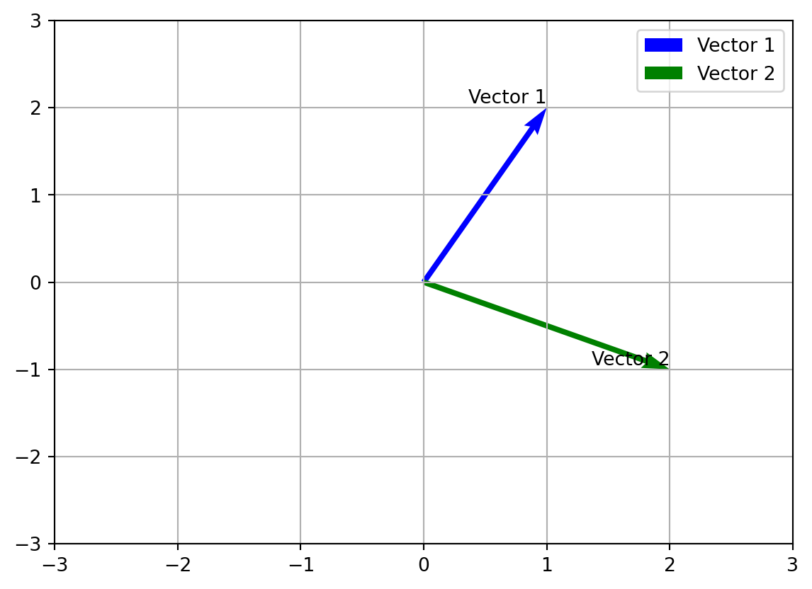

Rectas en \(\mathbb{R}^2\)
Rectas en \(\mathbb{R}^2\)
Nosotros podemos dibujar una recta en \(\mathbb{R}^2\) si conocemos un punto de la recta y su pendiente. La ecuación de la recta es:
\[y = m \cdot x + b\]
Donde \(m\) es la pendiente y \(b\) es la ordenada al origen, esta ecuación se llama una ecuación cartesiana de la recta. Existe otra forma de escribir la ecuación de la recta, que es llamada una recta paramétrica, para poder intuir como podemos escribir una recta paramétrica, vamos a ver un ejemplo. Para ello necesitamos un punto por donde pase la recta y un vector director.
Ahora supongamos que tenemos un punto \(P\) y un vector director \(\vec{v}\), entonces la recta que pasa por el punto \(P\) y tiene dirección \(\vec{v}\) se puede escribir como:
\[\vec{l}(t) = \vec{P} + t \cdot \vec{v}\]
de esta forma podriamos dibujar la recta que pasa por el punto \(P\) y tiene dirección \(\vec{v}\).

De esta forma podríamos definir una recta en \(\mathbb{R}^2\) de forma paramétrica.
Ejercicio
Dibuja la recta que pasa por el punto \(P(3,2)\) y tiene dirección \(\vec{v} = (1,2)\).
Aquí tenemos una pregunta que nos podemos hacer, ¿cómo podemos saber si dos rectas son paralelas o perpendiculares? Para ello necesitamos saber que dos rectas son paralelas si sus vectores directores son proporcionales, es decir, si \(\vec{v}_1 = k \cdot \vec{v}_2\) entonces las rectas son paralelas. Por otro lado, dos rectas son perpendiculares si sus vectores directores son ortogonales, es decir, si \(\vec{v}_1 \cdot \vec{v}_2 = 0\) entonces las rectas son perpendiculares.

Pasar de la forma cartesiana a la forma paramétrica
Para pasar de una ecuación cartesiana a una ecuación paramétrica, lo podemos hacer de la siguiente forma:
- Despejamos \(y\) de la ecuación cartesiana:
\[y = m \cdot x + b\]
- Ahora igualamos a \(t\) a \(x\), de esta forma tenemos dos nuevas ecuaciones:
\[x = t\] \[y = m \cdot t + b\]
- De aquí podemos obtener el vector directriz
\[\vec{v} = (1,m)\]
y el punto \(P = (0,b)\), de esta forma la ecuación paramétrica de la recta es:
\[\vec{l}(t) = \vec{P} + t \cdot \vec{v}\]
Pasar de la forma paramétrica a la forma cartesiana
Para pasar de una ecuación paramétrica a una ecuación cartesiana, lo podemos hacer de la siguiente forma:
- Reescribimos nuestra ecuación paramétrica de la siguiente forma:
\[\vec{l}(t) = \vec{P} + t \cdot \vec{v}=\Big(P_1t+v_1,P_2t+v_2\Big)\]
- Ahora igualamos cada término al vector \((x,y)\), de esta forma tenemos dos nuevas ecuaciones:
\[x = P_1t+v_1\] \[y = P_2t+v_2\]
- Despejamos \(t\) en las ecuaciones anteriores:
\[t = \frac{x-v_1}{P_1}\] \[t = \frac{y-v_2}{P_2}\]
- Igualamos las dos ecuaciones anteriores y obtenemos la ecuación cartesiana de la recta:
\[\frac{x-v_1}{P_1} = \frac{y-v_2}{P_2}\]
De esta forma podemos pasar de una ecuación paramétrica a una ecuación cartesiana.
Distancia entre dos puntos
Para calcular la distancia entre dos puntos se debe un vector que una los dos puntos y luego podremos calcular la norma de este vector.
Ejemplo
Calcular la distancia entre el punto \(P(2,3)\) y el punto \(Q(4,5)\). Para calcular un vector que parta del punto \(P\) y llegue al punto \(Q\) podemos hacer lo siguiente:
\[\vec{v} = Q - P = (4-2,5-3) = (2,2)\]
Ahora podemos calcular la norma de este vector
\[||\vec{v}|| = \sqrt{2^2+2^2} = \sqrt{8}\]
Este seria la longitud ecludiana de este vector, que es la distancia entre los dos puntos.

La distancia entre los puntos P y Q es: 2.8284271247461903Angulo entre dos vectores
Para calcular el ángulo entre dos vectores podemos hacer lo siguiente:

El ángulo entre los vectores es: 90.0 grados